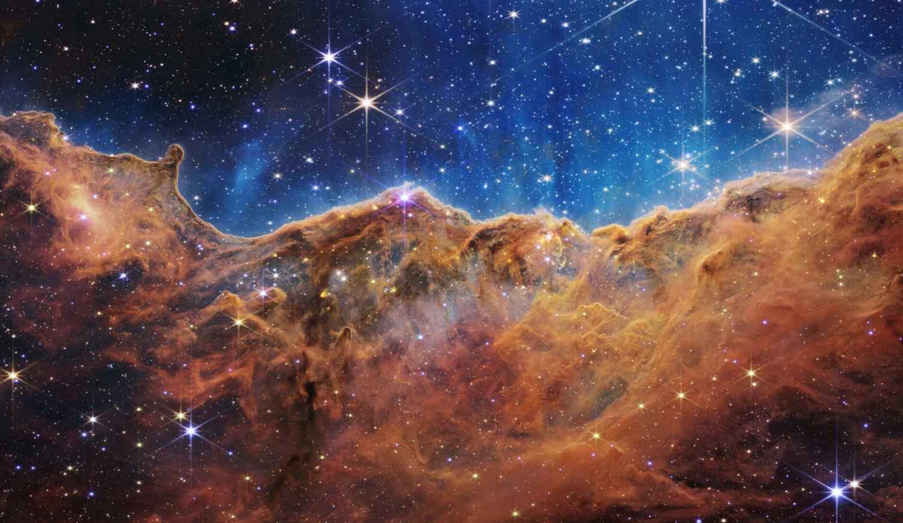
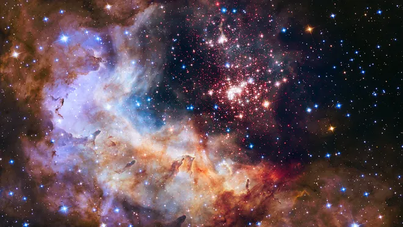
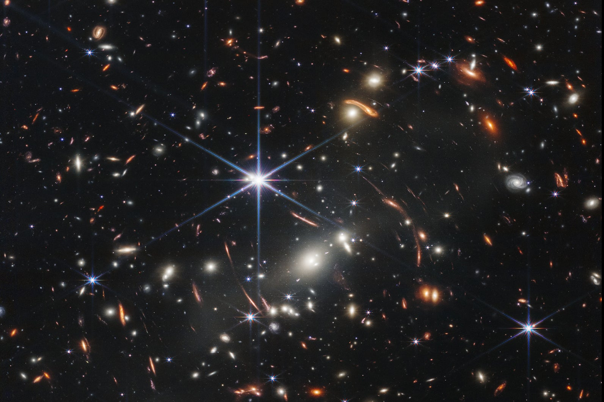

Celestial Wonder is a breathtaking journey of Visual through the mysteries of Cosmos. From the galaxies of deep space to the vibrant stars, each image captures the imense beauty of our Universe. These Photos of the cosomos and the moments remind us how we are and how infinite the skies can be.

This image released by NASA on Tuesday, July 12, 2022, shows the edge of a nearby, young, star-forming region NGC 3324 in the Carina Nebula. Captured in infrared light by the Near-Infrared Camera (NIRCam) on the James Webb Space Telescope (NASA, ESA, CSA, and STScI via AP)

This NASA/ESA Hubble Space Telescope image of he cluter Westerlund 2 and its surroundsings has been released to celebrate Hubble's 25th year in orbit

NASA described Webb’s First Deep Field, galaxy cluster SMACS 0723, as 'approximately the size of a grain of sand held at arm’s length, a tiny sliver of the vast universe.' (Image credit: NASA, ESA, CSA, STScI)